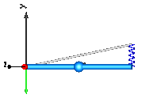
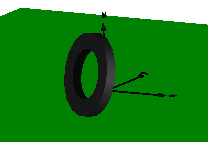
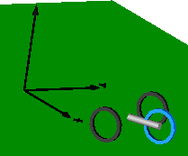
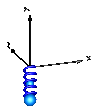
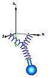
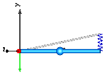
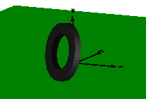
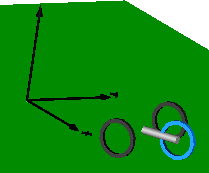
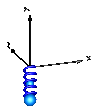
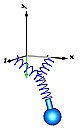

DoublePendulumInitTip













Elementary examples to demonstrate various features of the MultiBody library
This package contains elementary example models to demonstrate the usage of the MultiBody library
| Model | Description |
|---|---|
| DoublePendulum DoublePendulumInitTip |
Simple double pendulum with two revolute joints and two bodies. In DoublePendulumInitTip, the initial position of the pendulum tip is given
instead of common initialization by pendulum angles.
|
| ForceAndTorque | Demonstrates usage of Forces.ForceAndTorque element.
|
| FreeBody | Free flying body attached by two springs to environment.
|
| InitSpringConstant | Determine spring constant such that system is in steady state
at given position.  |
| LineForceWithTwoMasses | Demonstrates a line force with two point masses using a
Joints.Assemblies.JointUPS and alternatively a
Forces.LineForceWithTwoMasses component.
|
| Pendulum | Simple pendulum with one revolute joint and one body.
|
| PendulumWithSpringDamper | Simple spring/damper/mass system
|
| PointGravity | Two bodies in a point gravity field
|
| PointGravityWithPointMasses | Two point masses in a point gravity field (rotation of bodies is neglected)
|
| PointGravityWithPointMasses2 | Rigidly connected point masses in a point gravity field
|
| RollingWheel | Single wheel rolling on ground starting from an initial speed  |
| RollingWheelSetDriving | Rolling wheel set that is driven by torques driving the wheels
|
| RollingWheelSetPulling | Rolling wheel set that is pulled by a force  |
| SpringDamperSystem | Spring/damper system with a prismatic joint and
attached on free flying body
|
| SpringMassSystem | Mass attached via a prismatic joint and a spring to the world frame
|
| SpringWithMass | Point mass hanging on a spring  |
| ThreeSprings | 3-dimensional springs in series and parallel connection  |
| HeatLosses | Demonstrate the modeling of heat losses. |
| UserDefinedGravityField | Demonstrate the modeling of a user-defined gravity field. |
| Surfaces | Demonstrate the visualization of a sine surface,
as well as a torus and a wheel constructed from a surface
|
Extends from Modelica.Icons.ExamplesPackage (Icon for packages containing runnable examples).
| Name | Description |
|---|---|
| Simple double pendulum with two revolute joints and two bodies | |
| Demonstrate how to initialize a double pendulum so that its tip starts at a predefined position | |
| Demonstrate usage of ForceAndTorque element | |
| Free flying body attached by two springs to environment | |
| Determine spring constant such that system is in steady state at given position | |
| Demonstrate line force with two point masses using a JointUPS and alternatively a LineForceWithTwoMasses component | |
| Simple pendulum with one revolute joint and one body | |
| Simple spring/damper/mass system | |
| Two point masses in a point gravity field | |
| Two point masses in a point gravity field (rotation of bodies is neglected) | |
| Rigidly connected point masses in a point gravity field | |
| Simple spring/damper/mass system | |
| Mass attached with a spring to the world frame | |
| Point mass hanging on a spring | |
| 3-dim. springs in series and parallel connection | |
| Single wheel rolling on ground starting from an initial speed | |
| Rolling wheel set that is driven by torques driving the wheels | |
| Rolling wheel set that is pulled by a force | |
| Demonstrate the modeling of heat losses | |
| Demonstrate the modeling of a user-defined gravity field | |
| Demonstrate the visualization of a sine surface, as well as a torus and a wheel constructed from a surface | |
| Utility classes for elementary multi-body example models |
 Modelica.Mechanics.MultiBody.Examples.Elementary.DoublePendulum
Modelica.Mechanics.MultiBody.Examples.Elementary.DoublePendulumSimple double pendulum with two revolute joints and two bodies
This example demonstrates that by using joint and body elements animation is automatically available. Also the revolute joints are animated. Note, that animation of every component can be switched of by setting the first parameter animation to false or by setting enableAnimation in the world object to false to switch off animation of all components.
Extends from Modelica.Icons.Example (Icon for runnable examples).
Modelica.Mechanics.MultiBody.Examples.Elementary.DoublePendulumInitTipDemonstrate how to initialize a double pendulum so that its tip starts at a predefined position
This example demonstrates at hand of a double pendulum, how non-standard initialization can be defined: The absolute position of the pendulum tip, and its absolute speed shall be initially defined. This can be performed with the Joints.FreeMotionScalarInit joint that allows to initialize individual elements of its relative vectors. In this case, the x-, and y-coordinates of the relative position vector (visualized by the yellow arrow in the figure below) and of its derivative shall have a defined value at initial time. The configuration of the double pendulum at the initial time is shown below, where the tip position is required to have the coordinates x=0.7, y=0.3.
Setting only the tip's start position results in an ambiguous initialization since
two valid solutions for revolute1.phi and revolute2.phi exist.
Moreover, the calculated angles revolute1.phi and revolute2.phi
can be a multiple of expected solution phi1 and phi2,
To clearly indicate the preferred solution, guess initial angles can be additionally given.
In this example, it is simply done by revolute2.phi.start = Modelica.Constants.pi/2.
Extends from Modelica.Icons.Example (Icon for runnable examples).
Modelica.Mechanics.MultiBody.Examples.Elementary.ForceAndTorqueDemonstrate usage of ForceAndTorque element
In this example the usage of the general force element "ForceAndTorque" is shown. A "ForceAndTorque" element is connected between a body and a fixed point in the world system. The force and torque is defined by the "Constant" block. The two vectors are resolved in the coordinate system defined by the "fixedRotation" component that is fixed in the world system:
The animation view at time = 0 is shown in the figure below. The yellow line is directed from frame_a to frame_b of the forceAndTorque component. The green arrow characterizes the force acting at the body whereas the green double arrow characterizes the torque acting at the body. The lengths of the two vectors are proportional to the lengths of the force and torque vectors (constant scaling factors are defined as parameters in the forceAndTorque component):

Extends from Modelica.Icons.Example (Icon for runnable examples).
Modelica.Mechanics.MultiBody.Examples.Elementary.FreeBodyFree flying body attached by two springs to environment
This example demonstrates:
Extends from Modelica.Icons.Example (Icon for runnable examples).
| Name | Description |
|---|---|
| animation | = true, if animation shall be enabled |
Modelica.Mechanics.MultiBody.Examples.Elementary.InitSpringConstantDetermine spring constant such that system is in steady state at given position
This example demonstrates a non-standard type of initialization by calculating a spring constant such that a simple pendulum is at a defined position in steady state.
The goal is that the pendulum should be in steady state when the rotation angle of the pendulum is zero. The spring constant of the spring shall be calculated during initialization such that this goal is reached.
The pendulum has one degree of freedom, i.e., two states. Therefore, two additional equations have to be provided for initialization. However, parameter "c" of the spring component is defined with attribute "fixed = false", i.e., the value of this parameter is computed during initialization. Therefore, there is one additional equation required during initialization. The 3 initial equations are the rotational angle of the revolute joint and its first and second derivative. The latter ones are zero, in order to initialize in steady state. By setting the start values of phi, w, a to zero and their fixed attributes to true, the required 3 initial equations are defined.
After translation, this model is initialized in steady-state. The spring constant is computed as c = 49.05 N/m. An animation of this simulation is shown in the figure below.

Extends from Modelica.Icons.Example (Icon for runnable examples).
Modelica.Mechanics.MultiBody.Examples.Elementary.LineForceWithTwoMassesDemonstrate line force with two point masses using a JointUPS and alternatively a LineForceWithTwoMasses component
It is demonstrated how to implement line force components that shall have mass properties. Two alternative implementations are given:
In both cases, a linear 1-dimensional translational damper from the Modelica.Mechanics.Translational library is used as line force between the two attachment points. Simulate this system and plot the differences of the cut forces at both sides of the line force component ("rod_f_diff" and "body_f_diff"). Both vectors should be zero (depending on the chosen relative tolerance of the integration, the difference is in the order of 1e-10 … 1e-15).
Note, that the implementation with the LineForceWithTwoMasses component is simpler and more convenient. An animation of this simulation is shown in the figure below. The system on the left side in the front is the animation with the LineForceWithTwoMasses component whereas the system on the right side in the back is the animation with the JointUPS component.
Extends from Modelica.Icons.Example (Icon for runnable examples).
| Name | Description |
|---|---|
| m | Mass of point masses [kg] |
Modelica.Mechanics.MultiBody.Examples.Elementary.PendulumSimple pendulum with one revolute joint and one body
This simple model demonstrates that by just dragging components default animation is defined that shows the structure of the assembled system.
Extends from Modelica.Icons.Example (Icon for runnable examples).
Modelica.Mechanics.MultiBody.Examples.Elementary.PendulumWithSpringDamperSimple spring/damper/mass system
A body is attached on a revolute and prismatic joint. A 3-dim. spring and a 3-dim. damper are connected between the body and a point fixed in the world frame:

Extends from Modelica.Icons.Example (Icon for runnable examples).
| Name | Description |
|---|---|
| animation | = true, if animation shall be enabled |
Modelica.Mechanics.MultiBody.Examples.Elementary.PointGravityTwo point masses in a point gravity field
This model demonstrates a point gravity field. Two bodies are placed in the gravity field. The initial positions and velocities of these bodies are selected such that one body rotates on a circle and the other body rotates on an ellipse around the center of the point gravity field.

Extends from Modelica.Icons.Example (Icon for runnable examples).
Modelica.Mechanics.MultiBody.Examples.Elementary.PointGravityWithPointMassesTwo point masses in a point gravity field (rotation of bodies is neglected)
This model demonstrates the usage of model Parts.PointMass in a point gravity field. The PointMass model has the feature that the rotation is not taken into account and can therefore also not be calculated. This example demonstrates two cases where this does not matter: If a PointMass is not connected (body1, body2), the orientation object in these point masses is set to a unit rotation. If a PointMass is connected by a line force element, such as the used Forces.LineForceWithMass component, then the orientation object is set to a unit rotation within the line force element. These are the two cases where the rotation is automatically set to a default value, when the physical system does not provide the equations.
Extends from Modelica.Icons.Example (Icon for runnable examples).
Modelica.Mechanics.MultiBody.Examples.Elementary.PointGravityWithPointMasses2Rigidly connected point masses in a point gravity field
This model demonstrates the usage of model Parts.PointMass in a point gravity field. 6 point masses are connected rigidly together. Translating such a model results in an error, because point masses do not define an orientation object. The example demonstrates that in such a case (when the orientation object is not defined by an object that is connected to a point mass), a "MultiBody.Joints.FreeMotion" joint has to be used, to define the degrees of freedom of this structure.
In order to demonstrate that this approach is correct, in model "referenceSystem", the same system is again provided, but this time modeled with a generic body (Parts.Body) where the inertia tensor is set to zero. In this case, no FreeMotion object is needed because every body provides its absolute translational and rotational position and velocity as potential states.
The two systems should move exactly in the same way. The system with the PointMasses
object visualizes the point masses in "red", whereas the "referenceSystem" shows
its bodies in "blue".

Extends from Modelica.Icons.Example (Icon for runnable examples).
Modelica.Mechanics.MultiBody.Examples.Elementary.SpringDamperSystemSimple spring/damper/mass system
This example demonstrates:

Extends from Modelica.Icons.Example (Icon for runnable examples).
| Name | Description |
|---|---|
| animation | = true, if animation shall be enabled |
Modelica.Mechanics.MultiBody.Examples.Elementary.SpringMassSystemMass attached with a spring to the world frame
This example shows the two different ways how force laws can be utilized:

Extends from Modelica.Icons.Example (Icon for runnable examples).
| Name | Description |
|---|---|
| animation | = true, if animation shall be enabled |
Modelica.Mechanics.MultiBody.Examples.Elementary.SpringWithMassPoint mass hanging on a spring
This example shows that a force component may have a mass. The 3-dimensional spring as used in this example, has an optional point mass between the two points where the spring is attached. In the animation, this point mass is represented by a small, light blue, sphere.

Extends from Modelica.Icons.Example (Icon for runnable examples).
Modelica.Mechanics.MultiBody.Examples.Elementary.ThreeSprings3-dim. springs in series and parallel connection
This example demonstrates that 3-dimensional line force elements (here: Modelica.Mechanics.MultiBody.Forces.Spring elements) can be connected together in series without having a body with mass at the connection point (as usually required by multi-body programs). This is advantageous since stiff systems can be avoided, say, due to a stiff spring and a small mass at the connection point.
For a more thorough explanation, see MultiBody.UsersGuide.Tutorial.ConnectionOfLineForces.
Extends from Modelica.Icons.Example (Icon for runnable examples).
| Name | Description |
|---|---|
| animation | = true, if animation shall be enabled |
Modelica.Mechanics.MultiBody.Examples.Elementary.RollingWheelSingle wheel rolling on ground starting from an initial speed
Demonstrates how a single wheel is rolling on ground (starting with an initial velocity).
Extends from Modelica.Icons.Example (Icon for runnable examples).
Modelica.Mechanics.MultiBody.Examples.Elementary.RollingWheelSetDrivingRolling wheel set that is driven by torques driving the wheels
Demonstrates how a RollingWheelSet (two wheels rigidly coupled together) is rolling on ground when driven by some external torques.
Extends from Modelica.Icons.Example (Icon for runnable examples).
Modelica.Mechanics.MultiBody.Examples.Elementary.RollingWheelSetPullingRolling wheel set that is pulled by a force
Demonstrates how a RollingWheelSet (two wheels rigidly coupled together) is rolling on ground when pulled by an external force.
Extends from Modelica.Icons.Example (Icon for runnable examples).
Modelica.Mechanics.MultiBody.Examples.Elementary.HeatLossesDemonstrate the modeling of heat losses
This model demonstrates how to model the dissipated power of a multi-body force element by enabling the heatPort of all components and connecting these heatPorts via a convection element to the environment. The total heat flow generated by the elements of this multi-body system and transported to the environment is present in variable convection.fluid.
Extends from Modelica.Icons.Example (Icon for runnable examples).
Modelica.Mechanics.MultiBody.Examples.Elementary.UserDefinedGravityFieldDemonstrate the modeling of a user-defined gravity field
This example demonstrates a user defined gravity field. Function "world.gravityAcceleration" is redeclared to function theoreticalNormalGravityWGS84 that computes the theoretical gravity of the WGS84 ellipsoid earth model at and close to the earth ellipsoid surface. In the gravity field, a large, single pendulum is present. Via parameter "geodeticLatitude", the geodetic latitude on the earth can be defined, where the pendulum is present. The world frame is located at the WGS84 earth ellipsoid at this latitude. The result variable "gravity" is the gravity vector at the center of mass of the pendulum mass. Since the height of this mass is changing, the value of the gravity is also changing (the difference is in the order of 0.00001).
The result of the simulation is slightly different at the equator (geodeticLatitude=0) and at the poles (geodeticLatitude=90). For example, after 10 s of simulation time the rotation angle of the pendulum, rev.phi, has the following values:
| latitude [deg] | rev.phi [rad] |
| = 0 | = -2.39 rad |
| = 90 | = -2.42 rad |
Extends from Modelica.Icons.Example (Icon for runnable examples).
| Name | Description |
|---|---|
| geodeticLatitude | Geodetic latitude [deg] |
| height | Height of pendulum attachment point over WGS84 earth ellipsoid [m] |
Modelica.Mechanics.MultiBody.Examples.Elementary.SurfacesDemonstrate the visualization of a sine surface, as well as a torus and a wheel constructed from a surface
This example demonstrates the use of the Surface visualizer that visualizes a moving, parameterized surface. The "sine-wave" surface is a direct application of the surface model. Furthermore, the "torus" surface is an instance of Torus, the "wheel" surface is an instance of VoluminousWheel, and the "pipeWithScalarField surface is an instance of PipeWithScalarField. All latter visual shapes are constructed with the surface model. The following image shows a screen-shot of this example model:
Extends from Modelica.Icons.Example (Icon for runnable examples).
| Name | Description |
|---|---|
| x_min | Minimum value of x |
| x_max | Maximum value of x |
| y_min | Minimum value of y |
| y_max | Maximum value of y |
| z_min | Minimum value of z |
| z_max | Maximum value of z |